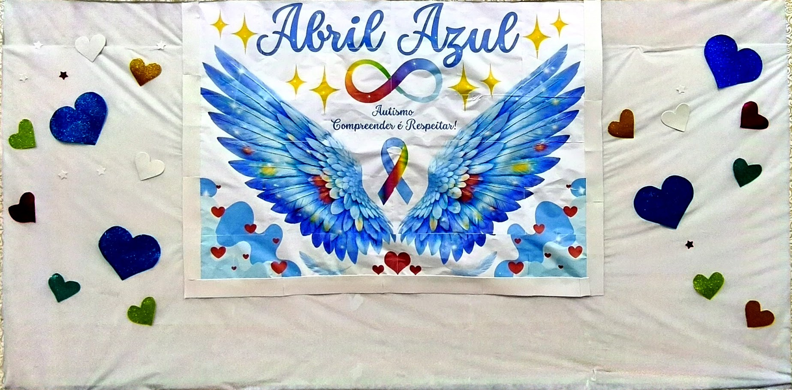
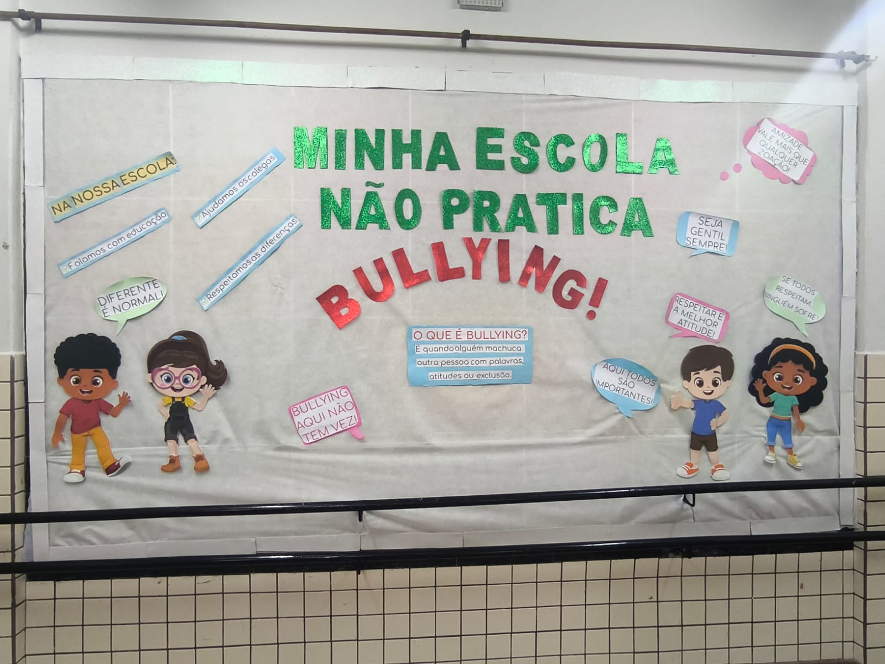

Mural
Abril Azul
Uma reflexão sobre conscientização, respeito às diferenças e inclusão no dia a dia escolar.
Colégio Estadual Cívico-Militar Tancredo de Almeida Neves.

Uma reflexão sobre conscientização, respeito às diferenças e inclusão no dia a dia escolar.

Uma leitura sobre respeito, convivência e cuidado com o outro. A reportagem conversa com a anotação do colégio e com o mural.

Uma reportagem com reflexão sobre significado, valores e convivência. O conteúdo se conecta ao mural e à anotação do colégio.

Uma imagem sobre acolhimento, reencontro e organização para começar o período letivo com mais atenção e parceria.